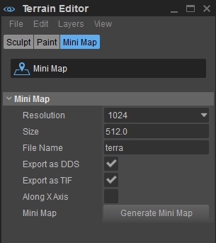
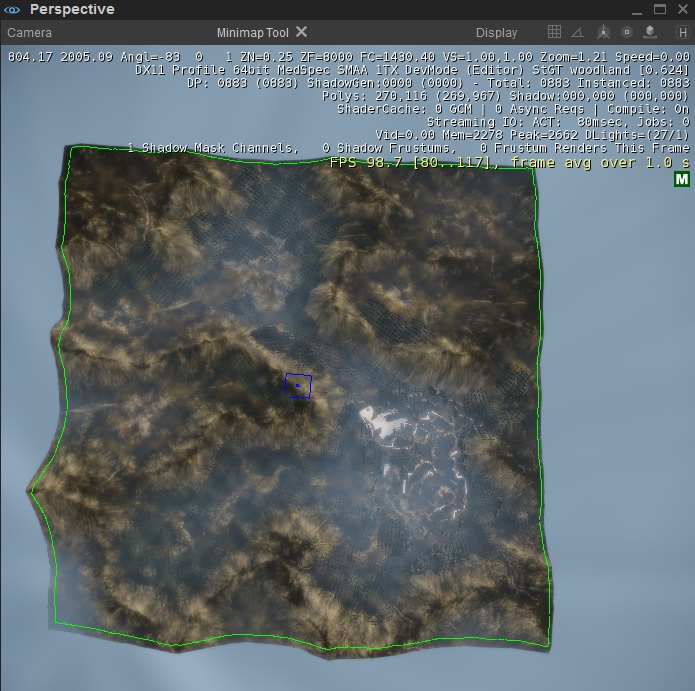
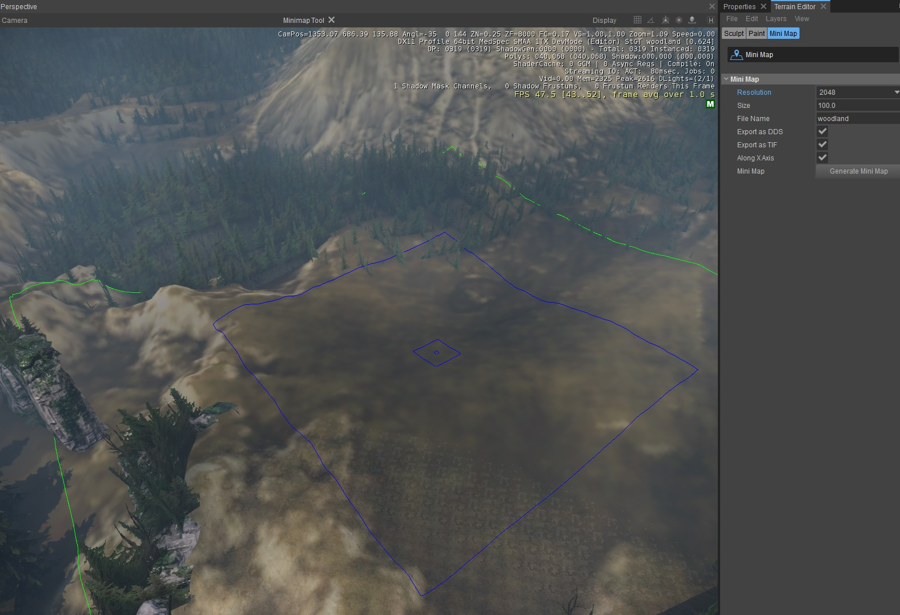

Обзор
Редактор Sandbox имеет встроенный инструмент для создания мини-карт. Обратите внимание, что для использования мини-карт необходимо установить форму Scale.
Подготовка к созданию мини-карты
При создании мини-карты есть определенные консольные переменные, которые лучше отключить. Специальная настройка CVars для мини-карт контролируется в MapScreenshotSettings.xml файл.
Вы можете редактировать этот файл, расположенный в папке <root>\Editor\ папку с помощью текстового редактора. Вы можете создать мини-карту, выбрав нужную область и нажав кнопку Создать мини-карту, под Редактор ландшафта -> Мини-карта.
Настройки стоя показаны здесь:
<settings>
<r_HDRRendering value="1"/>
<r_PostProcessEffects value="0"/>
<r_MotionBlur value="0"/>
<e_ScreenShotQuality value="0"/>
<e_ViewDistRatio value="100000000"/>
<r_DisplayInfo value="0"/>
<e_StreamCgfPoolSize value="128" />
<e_VegetationSpritesDistanceRatio value="20"/>
<e_ViewDistRatioVegetation value="100"/>
<e_Lods value="0"/>
<e_Vegetation value="0"/>
<e_TerrainOcclusionCulling value="0"/>
<e_OcclusionVolumes value="0"/>
<e_shadows value="0"/>
<e_portals value="3"/>
<e_fog value="0"/>
<r_hdrdebug value="1"/>
</settings>
Для лучшего качества можно настроить Размер и Разрешение настройки на вкладке Мини-карта. Кроме того, вы также можете изменить некоторые строки в файле *.xml или добавить новые команды CVar.
Эти настройки повысят качество и количество видимых объектов.
Вот пример некоторых настроек более высокого качества:
<e_TerrainDetailMaterials value="100000">
<e_TerrainDetailMaterialsViewDistZ value="1000000">
<e_LodRatio value="0">
<e_ViewDistRatio value="100000">
Создание миникарты
Откройте нужный уровень в редакторе Sandbox, а затем откройте вкладку Мини-карта, расположенную в Местность Редактор окно.
Рис1: Вкладка «Мини-карта» 
После нажатия кнопки «Мини-карта» на местности появляется зеленая ограничивающая рамка и синяя рамка выбора меньшего размера. Полезно отдалиться от местности, чтобы увидеть всю территорию.
Если вы не видите местность после уменьшения масштаба, попробуйте увеличить ViewDistance установка под Environment Editor.
Рис.2: Выбранная область для создания мини-карты. 
Чтобы переместить ограничивающую рамку мини-карты, щелкните другой участок местности, где вы хотите создать мини-карту.
Зеленая ограничивающая рамка показывает область, которая будет преобразована в изображение мини-карты. Вы можете настроить предпочтительную высоту, отредактировав введенные данные в поле Размер вариант под Мини-карта вкладка.
Убедитесь, что ограничивающая рамка мини-карты на самом деле больше, чем фактическая игровая зона вашей карты. Или же это может привести к аномалиям, если игрок стоит на краю вашей карты.
Регулировка Разрешение на мини-карте увеличивает размер изображения мини-карты, создаваемого редактором. Например, выбрав разрешение 2048, вы получите изображение мини-карты размером 2048x2048 пикселей.
Вам следует использовать очень большие разрешения (8192 или 16384), только если вы используете редактор в системе с очень высокими характеристиками и минимум 8 GB из RAM.
После того, как вы переместили коробку и установили Разрешение и Размери вы можете выбрать форматы файлов (*.dds и *.tif), а затем нажать Создать MiniMap. Вывод сохраняется непосредственно в той же папке, что и открытый в данный момент файл .cry, вместе с файлом .xml..
Рис.3: Создание мини-карты с помощью редактора ландшафта. 
Все связанные файлы (*.tif, *.dds и *.xml) будут сохранены под именем файла уровня.
*.xml Файл предоставляет CryENGINE координаты карты, чтобы положение игрока правильно отображалось на мини-карте.
Пример из уровня Лесной местности:
<MetaData>
<MiniMap Filename="woodland.dds" startX="1122.5697" startY="327.42395" endX="1922.5697" endY="1127.424" width="2048" height="2048"/>
</MetaData>Сгенерированный levelname.tif следует повернуть на 90° по часовой стрелке в программе редактирования изображений, чтобы он соответствовал ориентации текстуры ландшафта.
Сохраните и перезагрузите редактор, чтобы увидеть активную мини-карту в HUD.